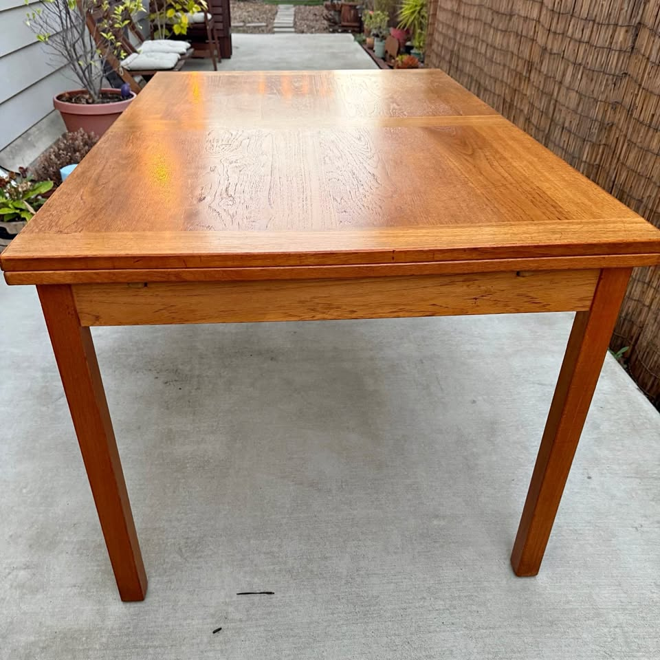

461 Anderson — Dining Table Watch
Mid-century modern · extendable to seat 8 · Danish teak/walnut preferred · driveable from the Bay Area
Updated August 10, 2026Current, click-verified, in-budget picks only · ★ value = price vs. quality
⚡ Look at right away
- NEW #1 — message today: a Vintage MCM Teak Dining Set — table + 6 chairs — $580 (Craigslist, Palo Alto), posted ~10 hours ago. Solid teak, four tapered legs (confirmed in photos), a matching-wood pull-out draw-leaf, 51" → 87" extended, excellent condition, delivery available. A whole set under $600 — by far the best value on the board.
- Also fresh & strong: a Mid-Century Modern Teak Dining Table, $700 (Facebook, Pleasanton), listed ~22 hours ago. Solid teak, four tapered legs, draw-leaves both ends, 51" → 90.5" extended, one small red-ish blemish. Table-only alternative to the $580 set — its photo isn't hosted here this run, so use the link: view listing.
- Still active from last run: the Vintage Teak $675 (Walnut Creek, solid teak, 90", four legs, no caveats), the Oakland teak draw-leaf $675 (94", four legs — but a teak-veneer top to inspect), and the D-Scan $950 (Emeryville, 94", named maker — confirm $950 vs the seller's "$1,250").
- Watchlist (over budget): the Gudme Møbelfabrik walnut expandable (priority maker, 63"→101½") — the Craigslist search index briefly showed $2,050, but the listing page still reads $2,995, so no confirmed drop yet. Even at $2,050 it clears the $2,000 ceiling only barely — watching.
- Both Craigslist and Facebook were swept. Other fresh budget options not carded (unverified base/size): a $600 San Rafael Danish extendable (dropped from $800), an $800 Sebastopol Danish extendable (dropped from $1,150, Sonoma), a $550 Fremont MCM teak. Ruled out: a $1,750 Novato "built-in leaves" (trestle), a $2,650 refinished Skovby (pedestal + over budget), a $2,500 SF walnut and assorted round/oval/pedestal SF pieces (over budget), a $399 "walnut finish" and a $150 table (not solid MCM teak), plus the usual UK imports.
Budget $1,000–$2,000 (table alone) · extends to ≥84" · Danish teak/walnut/rosewood · four legs (no pedestal/trestle)
Tables · in budget

Vintage MCM Teak Dining Set — Table + 6 Chairs
A full solid-teak set — table plus six matching teak chairs — for $580, on four clean tapered legs and extending to 87". Since the budget is for the table alone, six chairs (worth ~$600–1,200) come essentially free. Nothing else on the board is close on value.

Vintage Teak Extending Dining Table
A honey-teak draw-leaf table extending to 90" on four legs for $675, with no caveats to work around — the cleanest table-only pick on the board. No named maker, but solid teak, clean lines, well under budget.

Mid-Century Modern Teak Draw-Leaf Dining Table
Rectangular teak draw-leaf that extends the furthest of the group (94") and seats 8, on four clean square legs — all for $675. The only knock is a teak-veneer (not solid) top.

Vintage Danish Teak Dining Table by D-Scan
A named 1970s D-Scan Danish teak with hidden matching-teak leaves that extends to 94", listed at $950. A real maker under $1K would be excellent value — the one caveat is a price ambiguity to confirm.
⚡ Chairs — quick read
- Good news first: the new #1 table above (Palo Alto, $580) already includes six matching teak chairs — so if you go that route, you may not need a separate chair set at all.
- Best standalone set: the Set of 8 D-Scan teak chairs (Richmond) is $1,000 (down from $1,175) — ~$125/chair, the best per-chair price on the board. Every chair has its original D-Scan sticker; structurally sound, upholstery clean. Click-verified active this run.
- One caveat unchanged: the fabric is a dated tan/rust geometric weave — clean, but plan to recover (~$200–400 for all 8) for the plain look you want. The matching D-Scan table from this seller has sold, but the chairs still coordinate with any teak table above.
Budget $1,200–$2,400 for six · MCM teak/walnut that coordinates with the table · easy, clean fabric · driveable / delivers
Chairs · sets of 6+ · in budget

Set of 8 D-Scan Teak Dining Chairs
Eight authenticated D-Scan teak chairs — original maker sticker under every one — at ~$125/chair after a price drop, the best per-chair price on the board. Coordinates with any of the teak tables above.